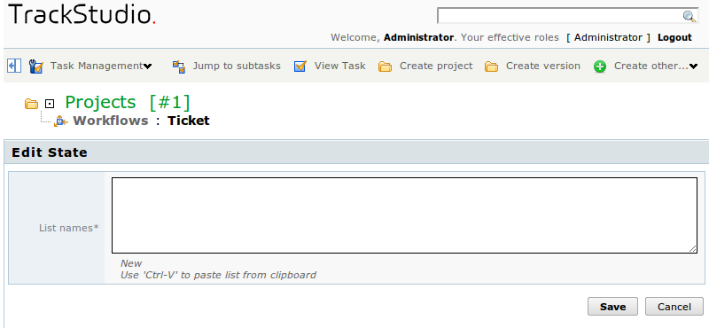
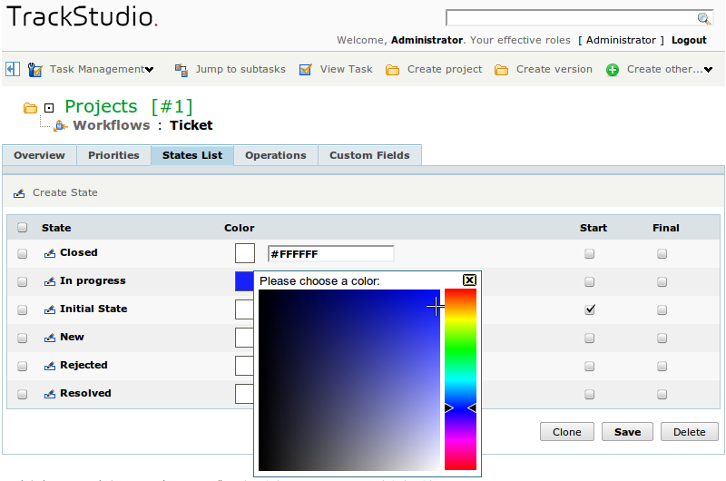
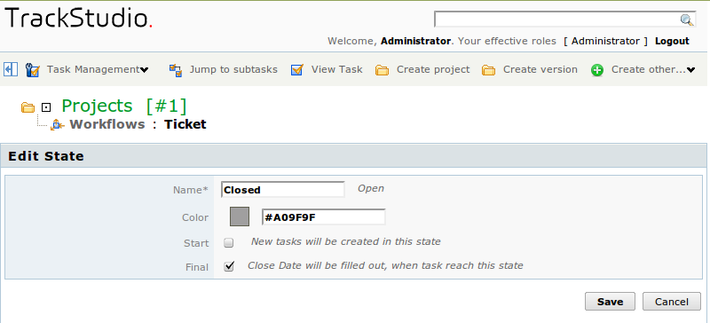
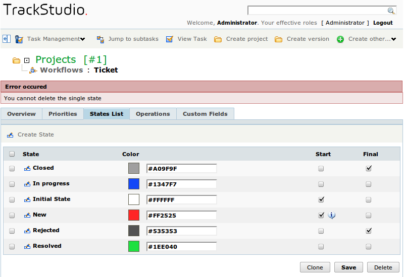

First of all, what you need to do in the new workflow is to configure the states set. It is better to plan beforehand in which states the task with this workflow will be.
So as to edit the state in the workflow, go to the page of this workflow through menu, and thereafter — to the tab "States List".
After creating the workflow, for it the state Initial State is created automatically. Rename this state and set the color for it. Color of the state will be displayed in the form of icon near to the name of the task with this workflow in the tasks lists.
States in the workflow can be initial, final and intermediate. They are marked by the icons:


In one of the initial states — the task will remain immediately after creation. Till version 4.0 in TrackStudio, it was possible to indicate only one initial state. Thereafter, taking into account the wishes of users, we made it possible to select: if several initial states are indicated for the workflow, field with the states list will be reflected on the form of task creation. This can be useful, if in the task with this workflow there is a pre-history outside the system, or if when it comes from different sources it must undergo different processing (confirmation of request, received for example through email, can be done). This way you can make several chains of processing of the task.
At least one initial state must be indicated for the workflow
There can also be many final states in the task, but it can’t be that there is no final state. Final state of the task can differ in that while moving to it, value of the field "Close date" is set for the task. In the remaining, it is just a general state.
How to set the states list
Press the button "Create state" in the middle bar. In the window that opens, enter one or several states. While entering several states, define them one in each row. Thereafter, press the button "Save".

How to edit the states list
You can edit the parameters of states directly in the list: change initial and final states, change their color. For changing the color, click on the square in the column Color and select the required one from the color palette, or set the color code in the respective field.
After entering all the changes, press the button "Save" below the form.

If you indicate several initial states, one of them will be the basic one, and remaining — marked with special signs as additional ones.
You can similarly clone (copy) one or more states, having selected them in the list and pressed the button "Clone below the form. However, usage of this measure is susceptible as you will need to edit the names of these states.
How to edit the name of state
So as to change the name of state, click on the icon  in the state row. In the form that opens, enter the new name of the state, and if required, change its parameters.
in the state row. In the form that opens, enter the new name of the state, and if required, change its parameters.

Press the button "Save" below the form.
How to delete a state
So as to delete the state, check mark it with the flag in the list and press the button "Delete" below in the form. If you try to delete the main initial state, then you will get an error message:

So as to delete the initial state, first remove the flags of initial state from it, press the button "Save" below in the form and only then delete it.
It is understood that you can’t delete from the workflow the state, if it is used in the existing tasks. If you just need to remove any state from the workflow — simply delete the operations, which transfer the tasks to this state, or delete from the operations the transitions to this state.